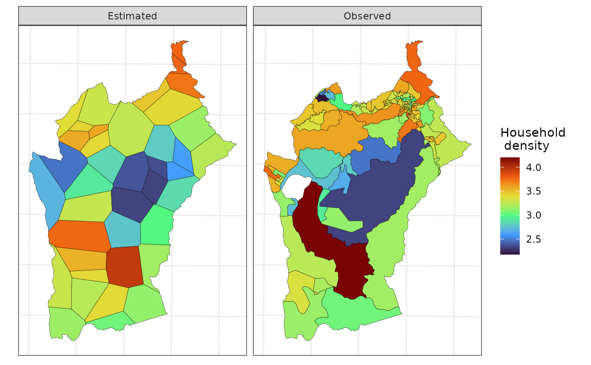
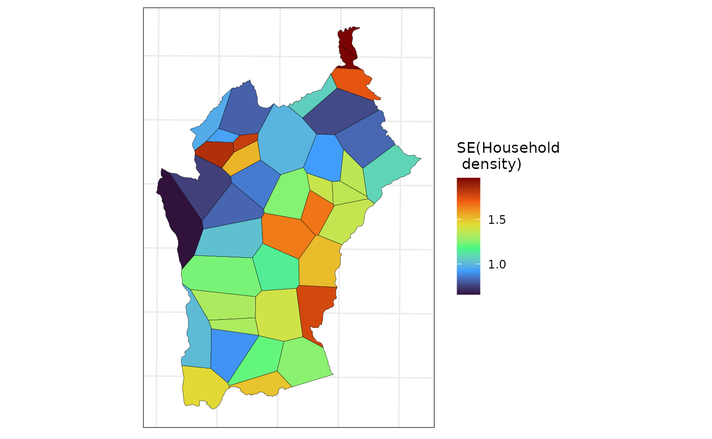

In applied settings, estimating socioeconomic and demographic variables for different administrative regions within a city is often of interest. While areal interpolation (AI, Goodchild and Lam 1980) easily computes such estimates, it lacks measures of uncertainty (Bradley, Wikle, and Holan 2016). Our package addresses this by providing both areal interpolation and methods to approximate the variance of estimates when the observed data’s variance is known, as is common with survey data.
This demonstration will utilize 2010 Brazilian Census data from Nova Lima. The objective is to estimate some variables in a separate map of the same municipality. The census map with the original data will be referred to as the “source” map, while the map where the data will be estimated will be referred to as the “target” map. In this example, the target map is artificially generated. To initiate the process, the data and necessary packages can be loaded using the code below. We recommend using a planar Coordinate Reference System (CRS) when using this method.
library(sf)
#> Linking to GEOS 3.10.2, GDAL 3.4.1, PROJ 8.2.1; sf_use_s2() is TRUE
library(smile)
library(ggplot2)
data(nl_ct)
nl_ct <- st_transform(nl_ct, 20823)The code chunk below creates the synthetic target map.
set.seed(2024)
## outer polygon
nl_outer <- nl_ct |>
st_geometry() |>
st_union() |>
smile:::st_remove_holes()
## creating `target` data
points_nl <- st_sample(x = nl_outer,
size = 40)
nl_vor <- do.call(c, points_nl) |>
## voronoi tesselation
st_voronoi(envelope = nl_outer) |>
st_collection_extract(type = "POLYGON") |>
st_set_crs(st_crs(nl_ct)) |>
st_intersection(nl_outer) |>
st_as_sf()
## creating id variable
nl_vor <- transform(nl_vor, id = seq_len(NROW(nl_vor)))Now, to estimate one (or several) variable observed at the
nl_ct dataset into the nl_vor data we can run
the following command:
nl_ests <-
ai(source = nl_ct,
target = nl_vor,
vars = c("hh_density",
"avg_income",
"avg_age"))
## displaying the result
nl_ests |>
st_drop_geometry() |>
head()
#> id hh_density avg_income avg_age
#> 1 1 2.695228 1730.009 24.02146
#> 2 2 2.477646 2078.178 25.59811
#> 3 3 3.154861 1729.689 30.22053
#> 4 4 2.920528 2253.925 30.70541
#> 5 5 3.300867 7904.903 34.49821
#> 6 6 3.390798 5468.113 34.89071In the function above, source is the map/dataset where
the variables to be estimated are observed, while target is
the map/dataset where the estimation is desired. The vars
argument is a character scalar (or vector) specifying the variable(s) in
source to be estimated in target. However,
this function does not quantify uncertainty in the estimates.
If the variance of the variable we wish to estimate in the target map
is available in the source map, we can use the ai_var
function to quantify the uncertainty around our point estimates. The
function is similar to ai, but with a few differences:
varsmust be a single variable name.my_varis a character indicating the variable in source containing the observed variable’s variance.var_methodspecifies the method for approximating variance: Moran’s I (“MI”) for autocorrelation-based approximation, or Cauchy-Schwarz (“CS”) for an upper bound.The current version only supports one variable at a time.
The ai_var function outputs the target dataset with two
additional columns: est (estimated variable) and
se_est (approximate standard error).
nl_est <-
ai_var(source = nl_ct,
target = nl_vor,
vars = "hh_density",
vars_var = "var_hhd",
var_method = "MI")
## renaming geometry
st_geometry(nl_est) <- "geometry"Below we use ggplot2 to plot the observed and estimated
“household density” in the source and target maps, respectively.
viz_dt <-
rbind(
transform(nl_ct, source = "Observed",
est = hh_density)[c("source", "est")],
transform(nl_est, source = "Estimated")[c("source", "est")]
)
ggplot(data = viz_dt,
aes(fill = est)) +
geom_sf(color = 1, lwd = .1) +
scale_fill_viridis_c(option = "H",
name = "Household \n density") +
theme_bw() +
facet_wrap( ~ source) +
theme(axis.text = element_blank(),
axis.ticks = element_blank())
Finally, the next map displays the uncertainty about the estimated household density.
